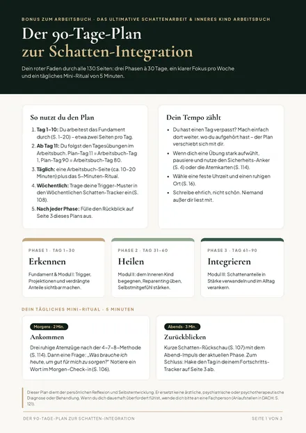

Bonus 1Separates PDF · 3 Seiten
Der 90-Tage-Plan zur Schatten-Integration
Dein roter Faden durch alle 130 Seiten: drei Phasen à 30 Tage, ein klarer Wochenfokus, ein 5-Minuten-Mini-Ritual für jeden Tag und ein Fortschritts-Tracker zum Abhaken.
Wert: 19,00 €